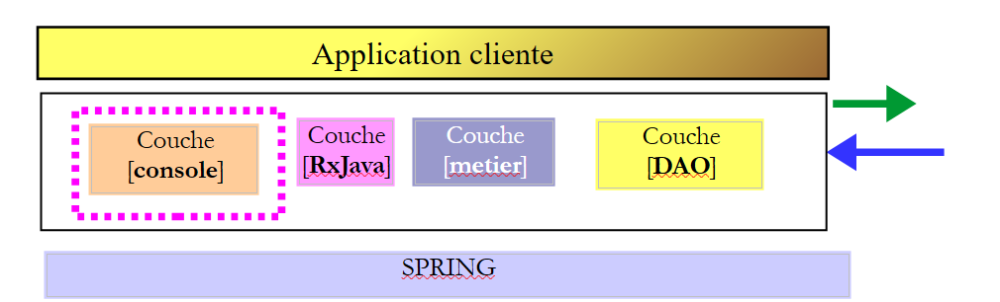
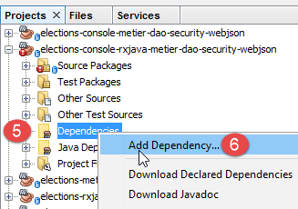
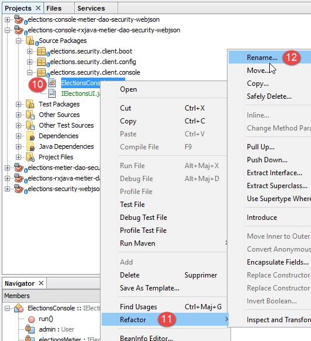
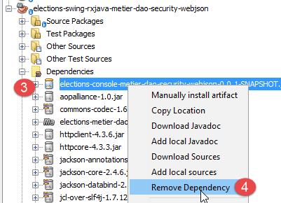
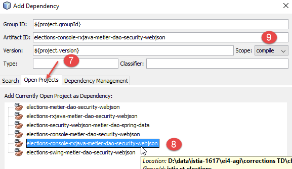
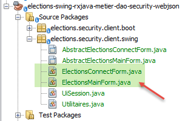
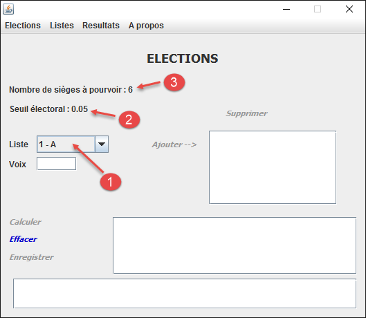

20. Programmation asynchrone avec RxJava
Document à lire : [Introduction à RxJava. Application aux environnements Swing et Android.]
Dans ce chapitre, nous revenons sur le chapitre 17.6 où nous avions construit une application client / serveur avec l'architecture suivante :
 |
Certaines actions de l'utilisateur sur l'interface Swing en [1] déclenchent des actions jusque dans la base de données en [3] au-travers d'un réseau HTTP [2]. A cause de celui-ci, la réponse à l'action de l'utilisateur peut être plus ou moins longue à venir. Ce serait bien de pouvoir mettre un indicateur d'attente sur l'interface utilisateur avec une option d'annulation de l'opération lancée si celle-ci venait à être trop longue. Dans le chapitre 17.6, chaque action de l'utilisateur nécessitant d'échanger des informations avec le serveur est synchrone. Le gestionnaire d'événement exécuté par le code n'est terminé que lorsque la réponse est reçue. Pendant tout ce temps, l'interface graphique est gelée : elle ne répond pas aux nouvelles actions de l'utilisateur. Celles-ci sont simplement mises en file d'attente pour être traitées lorsque le gestionnaire d'événement qui s'exécute actuellement soit terminé. Ainsi, si on faisait apparaître un bouton d'annulation, l'utilisateur pourrait cliquer dessus mais il ne se passerait rien tant que l'opération en cours ne serait pas terminée. Le bouton d'annulation n'aurait alors aucun intérêt.
Pour que le clic sur le bouton d'annulation soit suivi d'effet, il faut que l'opération en cours soit terminée. Pour cela, elle doit lancer l'opération potentiellement longue de façon asynchrone :
- le gestionnaire d'événement lance l'opération longue mais n'attend pas son résultat et rend la main au thread de l'UI qui gère les événements de l'interface graphique. L'opération longue est lancée sur un thread différent de celui de l'UI ce qui ne bloque pas ce dernier ;
- si l'utilisateur clique sur le bouton d'annulation avant la fin de l'opération longue, le thread de l'UI qui est inoccupé peut traiter cet événement. On peut alors abandonner l'opération longue en ignorant son résultat ;
- si l'opération longue n'a pas été annulée, l'arrivée de la réponse va provoquer un événement dans le thread de l'UI. Celui-ci, s'il est inoccupé, va alors exécuter le code lié à cet événement qui va exploiter la réponse ;
L'interface utilisateur va fonctionner comme précédemment. Si les temps de réponse du serveur sont rapides, l'utilisateur ne verra pas la différence. S'ils sont perceptibles, l'utilisateur verra un bouton d'annulation apparaître et aura la possibilté d'interrompre l'opération en cours.
La bibliothèque [Rx] permet de faire de la programmation asynchrone. Son grand intérêt réside dans le fait qu'elle a été portée dans de nombreux environnements (Java, .NET, JS, ...) et que sa maîtrise dans un environnement peut être transposée facilement dans un autre environnement. Nous allons nous appuyer ici sur le chapitre 2 du document [Introduction à RxJava. Application aux environnements Swing et Android]. Le lecteur est invité à le lire. Dans la suite, nous reprenons du code issu des exemples de ce chapitre.
Nous allons faire évoluer l'architecture de l'application de la façon suivante :
 |
- en [1], nous intercalons une couche [RxJava] entre la couche [swing] et la couche [métier]. Les méthodes de celle-ci vont désormais être appelées de façon asynchrone ;
Nous allons procéder en plusieurs étapes :
- étape 1 : la couche [metier, DAO] présente pour l'instant une interface synchrone à la couche [ui]. Nous allons la transformer en une couche asynchrone [RxJava, metier, DAO] ;
- étape 2 : nous porterons l'application console synchrone en une application toujours synchrone mais utilisant l'interface asynchrone [RxJava, metier, DAO] ;
- étape 3 : nous porterons l'application swing synchrone en une application swing asynchrone ;
20.1. étape 1
Nous transformons la couche synchrone actuelle [metier, DAO] en une couche asynchrone [RxJava, metier, DAO].
20.1.1. Création
Nous partons du projet Maven du chapitre 17.4, que nous ouvrons avec Netbeans :
 |  |
Nous dupliquons ce projet [1] (copy / paste) dans un nouveau projet [elections-rxjava-metier-dao-security-webjson] [2].
20.1.2. Configuration Maven
Nous faisons évoluer le fichier [pom.xml] du nouveau projet pour ajouter la dépendance sur la bibliothèque [RxJava] :
<project xmlns="http://maven.apache.org/POM/4.0.0" xmlns:xsi="http://www.w3.org/2001/XMLSchema-instance"
xsi:schemaLocation="http://maven.apache.org/POM/4.0.0 http://maven.apache.org/xsd/maven-4.0.0.xsd">
<modelVersion>4.0.0</modelVersion>
<groupId>istia.st.elections</groupId>
<artifactId>elections-metier-dao-security-rxjava-webjson</artifactId>
<version>0.0.1-SNAPSHOT</version>
<description>Client jUnit du serveur web / jSON</description>
<name>elections-metier-dao-security-rxjava-webjson</name>
<properties>
<project.build.sourceEncoding>UTF-8</project.build.sourceEncoding>
<java.version>1.8</java.version>
</properties>
<parent>
<groupId>org.springframework.boot</groupId>
<artifactId>spring-boot-starter-parent</artifactId>
<version>1.2.7.RELEASE</version>
</parent>
<dependencies>
<!-- Spring -->
<dependency>
<groupId>org.springframework</groupId>
<artifactId>spring-web</artifactId>
</dependency>
<!-- librairie jSON utilisée par Spring -->
<dependency>
<groupId>com.fasterxml.jackson.core</groupId>
<artifactId>jackson-core</artifactId>
</dependency>
<dependency>
<groupId>com.fasterxml.jackson.core</groupId>
<artifactId>jackson-databind</artifactId>
</dependency>
<!-- composant utilisé par Spring RestTemplate -->
<dependency>
<groupId>org.apache.httpcomponents</groupId>
<artifactId>httpclient</artifactId>
</dependency>
<!-- Google Guava -->
<dependency>
<groupId>com.google.guava</groupId>
<artifactId>guava</artifactId>
<version>16.0.1</version>
<scope>test</scope>
</dependency>
<!-- bibliothèque de logs -->
<dependency>
<groupId>org.springframework.boot</groupId>
<artifactId>spring-boot-starter-logging</artifactId>
</dependency>
<!-- Spring Boot Test -->
<dependency>
<groupId>org.springframework.boot</groupId>
<artifactId>spring-boot-starter-test</artifactId>
<scope>test</scope>
</dependency>
<!-- Spring Boot -->
<dependency>
<groupId>org.springframework.boot</groupId>
<artifactId>spring-boot</artifactId>
<scope>test</scope>
</dependency>
<!-- https://mvnrepository.com/artifact/io.reactivex/rxjava -->
<dependency>
<groupId>io.reactivex</groupId>
<artifactId>rxjava</artifactId>
<version>1.2.0</version>
</dependency>
</dependencies>
<build>
<plugins>
<plugin>
<groupId>org.apache.maven.plugins</groupId>
<artifactId>maven-surefire-plugin</artifactId>
<version>2.18.1</version>
</plugin>
</plugins>
</build>
</project>
- lignes 65-70 : nous avons ajouté la dépendance sur la bibliothèque RxJava ;
20.1.3. Implémentation asynchrone de la couche [métier]
 |
Pour implémenter la couche [RxJava, métier], nous ajoutons une interface asynchrone [IRxElectionsMetier] [1] et son implémentation [RxElectionsMetier] [2] au projet :
 |
L'interface [IRxElectionsMetier] est l'interface asynchrone de la couche [RxJava, métier]. Son code est le suivant :
package elections.security.client.metier;
import elections.security.client.entities.ListeElectorale;
import elections.security.client.entities.User;
import rx.Observable;
public interface IRxElectionsMetier {
// authentification
Observable<Void> authenticate(User user);
// obtenir les listes en compétition
Observable<ListeElectorale[]> getListesElectorales(User user);
// le nombre de sièges à pourvoir
Observable<Integer> getNbSiegesAPourvoir(User user);
// le seuil électoral
Observable<Double> getSeuilElectoral(User user);
// l'enregistrement des résultats
Observable<Void> recordResultats(User user, ListeElectorale[] listesElectorales);
// le calcul des sièges
Observable<ListeElectorale[]> calculerSieges(User user, ListeElectorale[] listesElectorales);
}
L'interface [IRxElectionsMetier] reprend les méthodes de l'interface [IElectionsMetier] mais là où une méthode M de l'interface [IElectionsMetier] rendait un résultat de type T, la méthode M de l'interface [IRxElectionsMetier] rend un résultat de type Observable<T>. Le type [Observable] est fourni par la bibliothèque RxJava. Un type Observable<T> fournit la méthode [subscribe] qui va obtenir le type T de façon asynchrone. Sont associés à cette méthode trois événements :
- onSuccess(T result) qui avertit qu'un résultat de type T est disponible. L'opération asynchrone peut fournir plusieurs résultats ;
- onError(Throwable th) qui avertit que l'opération asynchrone a rencontré une erreur ;
- onCompleted() qui avertit que l'opération asynchrone est terminée ;
Tant que la méthode [Observable.subscribe] n'est pas appelée, l'opération asynchrone liée à l'observable n'est pas lancée. Le code qui appelle une méthode M de l'interface [IRxElectionsMetier] n'obtient pas le résultat T attendu, mais un type Observable<T> qui lui permettra ultérieurement d'obtenir le résultat T en appelant la méthode [Observable.subscribe].
L'implémentation [RxElectionsMetier] de l'interface [IRxElectionsMetier] est la suivante :
package elections.security.client.metier;
import elections.security.client.entities.ListeElectorale;
import elections.security.client.entities.User;
import org.springframework.beans.factory.annotation.Autowired;
import org.springframework.stereotype.Component;
import rx.Observable;
@Component
public class RxElectionsMetier implements IRxElectionsMetier {
@Autowired
private IElectionsMetier metier;
@Override
public Observable<Void> authenticate(User user) {
...
}
@Override
public Observable<ListeElectorale[]> getListesElectorales(User user) {
return Observable.create(subscriber -> {
try {
// appel méthode synchrone puis réponse au souscripteur
subscriber.onNext(metier.getListesElectorales(user));
// on signale la fin de l'observable
subscriber.onCompleted();
} catch (Exception e) {
// on fait suivre l'exception
subscriber.onError(e);
}
});
}
@Override
public Observable<Integer> getNbSiegesAPourvoir(User user) {
...
}
@Override
public Observable<Double> getSeuilElectoral(User user) {
...
}
@Override
public Observable<Void> recordResultats(User user, ListeElectorale[] listesElectorales) {
...
}
@Override
public Observable<ListeElectorale[]> calculerSieges(User user, ListeElectorale[] listesElectorales) {
...
}
}
- lignes 12-13 : injection Spring de la couche métier synchrone ;
- lignes 20-34 : nous allons commenter la méthode [getListesElectorales] qui au lieu de rendre un type [ListeElectorale[]] rend un type [Observable<ListeElectorale[]>] ;
- lignes 22-32 : la méthode statique [Observable.create] permet de créer un Observable à partir d'un type [Subscriber]. Le type [Subscriber] représente un abonné aux flux de résultats produits par le processus observé (l'Observable). Il fournit trois méthodes :
- [Subscriber.onNext] (ligne 25) pour recevoir un résultat du processus observé ;
- [Subscriber.onError] (ligne 30) pour recevoir une exception du processus observé. Après une exception, le type [Observable] n'émet plus de résultats ;
- [Subscriber.onCompleted] (ligne 27) pour recevoir le signal de fin d'émission du processus observé. Ici, le processus observé n'émet qu'un élément. On remarquera ici que ce signal n'est pas émis s'il se produit une exception. C'est le comportement par défaut des Observables : l'émission d'une exception signale également la fin des émissions. Les souscripteurs le savent ;
- lignes 22-34 : la méthode [Observable.create] admet pour paramètre un type [Observable.OnSubscribe]. Ce type est une interface fonctionnelle. Cette notion a été introduite avec Java 8 et désigne une interface ayant une unique méthode. Ici, la méthode unique de l'interface [Observable.OnSubscribe] est la suivante :
Pour implémenter une interface fonctionnelle de méthode unique m(param1, param2, ..., paramn), on peut utiliser la syntaxe simplifiée suivante :
C'est ce qui est fait aux lignes 22-34 :
- [subscriber] est le paramètre de la méthode [Observable.OnSubscribe.call] ;
- lignes 23-32 : le code qu'on veut donner à la méthode [call] ;
- ligne 25 : on demande les listes électorales de façon synchrone à la couche [métier] injectée en ligne 13. Il va donc y avoir attente du résultat. Lorsque celui-ci va être reçu, il est passé à la méthode [onNext] du souscripteur ;
- ligne 28 : en cas d'erreur, l'exception est passée à la méthode [onError] du souscripteur ;
- ligne 31 : on n'attend qu'un résultat. Lorsque celui-ci a été obtenu (les listes électorales ou une exception), on indique au souscripteur que le processus observé a terminé d'émettre des résultats ;
On se rappellera bien que la méthode [RxElectionsMetier] rend un type Observable<ListeElectorale[]> et non le type ListeElectorale[] lui-même. Il faudra que le code appelant appelle la méthode Observable<ListeElectorale[]>.subscribe pour que le code des lignes 23-33 soit exécuté et rende les listes électorales au moyen de la ligne 25.
Le code des autres méthodes est analogue :
package elections.security.client.metier;
import elections.security.client.entities.ListeElectorale;
import elections.security.client.entities.User;
import org.springframework.beans.factory.annotation.Autowired;
import org.springframework.stereotype.Component;
import rx.Observable;
@Component
public class RxElectionsMetier implements IRxElectionsMetier {
@Autowired
private IElectionsMetier metier;
@Override
public Observable<Void> authenticate(User user) {
return Observable.create(subscriber -> {
try {
// appel méthode synchrone
metier.authenticate(user);
// on signale la fin de l'observable
subscriber.onCompleted();
} catch (Exception e) {
// on fait suivre l'exception
subscriber.onError(e);
}
});
}
@Override
public Observable<ListeElectorale[]> getListesElectorales(User user) {
return Observable.create(subscriber -> {
try {
// appel méthode synchrone puis réponse au souscripteur
subscriber.onNext(metier.getListesElectorales(user));
// on signale la fin de l'observable
subscriber.onCompleted();
} catch (Exception e) {
// on fait suivre l'exception
subscriber.onError(e);
}
});
}
@Override
public Observable<Integer> getNbSiegesAPourvoir(User user) {
return Observable.create(subscriber -> {
try {
// appel méthode synchrone puis réponse au souscripteur
subscriber.onNext(metier.getNbSiegesAPourvoir(user));
// on signale la fin de l'observable
subscriber.onCompleted();
} catch (Exception e) {
// on fait suivre l'exception
subscriber.onError(e);
}
});
}
@Override
public Observable<Double> getSeuilElectoral(User user) {
return Observable.create(subscriber -> {
try {
// appel méthode synchrone puis réponse au souscripteur
subscriber.onNext(metier.getSeuilElectoral(user));
// on signale la fin de l'observable
subscriber.onCompleted();
} catch (Exception e) {
// on fait suivre l'exception
subscriber.onError(e);
}
});
}
@Override
public Observable<Void> recordResultats(User user, ListeElectorale[] listesElectorales) {
return Observable.create(subscriber -> {
try {
// appel méthode synchrone
metier.recordResultats(user, listesElectorales);
// on signale la fin de l'observable
subscriber.onCompleted();
} catch (Exception e) {
// on fait suivre l'exception
subscriber.onError(e);
}
});
}
@Override
public Observable<ListeElectorale[]> calculerSieges(User user, ListeElectorale[] listesElectorales) {
return Observable.create(subscriber -> {
try {
// appel méthode synchrone puis réponse au souscripteur
subscriber.onNext(metier.calculerSieges(user, listesElectorales));
// on signale la fin de l'observable
subscriber.onCompleted();
} catch (Exception e) {
// on fait suivre l'exception
subscriber.onError(e);
}
});
}
}
- lignes 20 et 81 : la méthode [onNext] du souscripteur n'est pas appelée parce que celui-ci n'attend pas de résultats ;
20.1.4. Les tests JUnit de la couche [métier]
 |
20.1.4.1. Test01
Nous reprenons le test unitaire [Test01] étudié au paragraphe 17.4.4. Il a été prévu pour faire des appels synchrones à l'interface [IElectionsMetier]. Nous le modifions pour qu'il fasse des appels synchrones à la nouvelle interface [IRxElectionsMetier]. Il est en effet possible de faire des appels synchrones à une interface asynchrone RxJava. Le code devient le suivant :
package elections.security.client.metier.junit;
import org.junit.Assert;
import org.junit.BeforeClass;
import org.junit.Test;
import org.junit.runner.RunWith;
import org.springframework.beans.factory.annotation.Autowired;
import org.springframework.boot.test.SpringApplicationConfiguration;
import org.springframework.test.context.junit4.SpringJUnit4ClassRunner;
import com.fasterxml.jackson.core.JsonProcessingException;
import com.fasterxml.jackson.databind.ObjectMapper;
import elections.security.client.config.MetierConfig;
import elections.security.client.entities.ElectionsException;
import elections.security.client.entities.ListeElectorale;
import elections.security.client.entities.User;
import elections.security.client.metier.IRxElectionsMetier;
import rx.observables.BlockingObservable;
@SpringApplicationConfiguration(classes = MetierConfig.class)
@RunWith(SpringJUnit4ClassRunner.class)
public class Test01 {
// couche [electionsMetier]
@Autowired
private IRxElectionsMetier electionsMetier;
// mappeur jSON
private final ObjectMapper mapper = new ObjectMapper();
// utilisateurs
static private User admin;
static private User user;
static private User unknown;
@BeforeClass
public static void initTest() {
admin = new User("admin", "admin");
user = new User("user", "user");
unknown = new User("x", "y");
}
@Test()
public void checkUserUser() {
ElectionsException se = null;
try {
BlockingObservable.from(electionsMetier.authenticate(user)).firstOrDefault(null);
} catch (ElectionsException e) {
se = e;
}
Assert.assertNotNull(se);
Assert.assertEquals("403 Forbidden", se.getErreurs().get(0));
}
@Test()
public void checkUserUnknown() {
ElectionsException se = null;
try {
BlockingObservable.from(electionsMetier.authenticate(unknown)).firstOrDefault(null);
} catch (ElectionsException e) {
se = e;
}
Assert.assertNotNull(se);
Assert.assertEquals("401 Unauthorized", se.getErreurs().get(0));
}
@Test()
public void checkUserAdmin() {
ElectionsException se = null;
try {
BlockingObservable.from(electionsMetier.authenticate(admin)).firstOrDefault(null);
} catch (ElectionsException e) {
se = e;
}
Assert.assertNull(se);
}
/**
* vérification 1 : méthode de calcul des sièges on fixe en dur les listes
*/
@Test
public void calculSieges1() {
// on crée le tableau des 7 listes candidates
ListeElectorale[] listes = new ListeElectorale[7];
listes[0] = new ListeElectorale("A", 32000, 0, false);
listes[1] = new ListeElectorale("B", 25000, 0, false);
listes[2] = new ListeElectorale("C", 16000, 0, false);
listes[3] = new ListeElectorale("D", 12000, 0, false);
listes[4] = new ListeElectorale("E", 8000, 0, false);
listes[5] = new ListeElectorale("F", 4500, 0, false);
listes[6] = new ListeElectorale("G", 2500, 0, false);
// on calcule les sièges de chacune des listes
listes = BlockingObservable.from(electionsMetier.calculerSieges(admin, listes)).first();
// on vérifie les résultats
Assert.assertEquals(2, listes[0].getSieges());
Assert.assertFalse(listes[0].isElimine());
Assert.assertEquals(2, listes[1].getSieges());
Assert.assertFalse(listes[1].isElimine());
Assert.assertEquals(1, listes[2].getSieges());
Assert.assertFalse(listes[2].isElimine());
Assert.assertEquals(1, listes[3].getSieges());
Assert.assertFalse(listes[3].isElimine());
Assert.assertEquals(0, listes[4].getSieges());
Assert.assertFalse(listes[4].isElimine());
Assert.assertEquals(0, listes[5].getSieges());
Assert.assertTrue(listes[5].isElimine());
Assert.assertEquals(0, listes[6].getSieges());
Assert.assertTrue(listes[6].isElimine());
}
/**
* vérification 2 : méthode de calcul des sièges on demande les listes à la couche [metier] puis on fixe en dur les
* voix
*/
@Test
public void calculSieges2() {
// on crée le tableau des 7 listes candidates
ListeElectorale[] listes = BlockingObservable.from(electionsMetier.getListesElectorales(admin)).first();
// on fixe en dur les voix
listes[0].setVoix(32000);
listes[1].setVoix(25000);
listes[2].setVoix(16000);
listes[3].setVoix(12000);
listes[4].setVoix(8000);
listes[5].setVoix(4500);
listes[6].setVoix(2500);
// on calcule les sièges obtenus par chacune des listes
listes = BlockingObservable.from(electionsMetier.calculerSieges(admin, listes)).first();
// on vérifie les résultats
Assert.assertEquals(2, listes[0].getSieges());
Assert.assertFalse(listes[0].isElimine());
Assert.assertEquals(2, listes[1].getSieges());
Assert.assertFalse(listes[1].isElimine());
Assert.assertEquals(1, listes[2].getSieges());
Assert.assertFalse(listes[2].isElimine());
Assert.assertEquals(1, listes[3].getSieges());
Assert.assertFalse(listes[3].isElimine());
Assert.assertEquals(0, listes[4].getSieges());
Assert.assertFalse(listes[4].isElimine());
Assert.assertEquals(0, listes[5].getSieges());
Assert.assertTrue(listes[5].isElimine());
Assert.assertEquals(0, listes[6].getSieges());
Assert.assertTrue(listes[6].isElimine());
}
/**
* vérification 3 méthode de calcul des sièges on provoque une exception
*/
@Test(expected = ElectionsException.class)
public void calculSieges3() {
// on crée un tableau de 24 listes candidates avec chacune 1 voix
ListeElectorale[] listes = new ListeElectorale[25];
// les 25 listes auront le même nombre de voix (4%)
for (int i = 0; i < listes.length; i++) {
listes[i] = new ListeElectorale("Liste" + (i + 1), 1, 0, false);
}
// calcul des sièges - normalement on doit avoir une ElectionsException
// avec un seuil èlectoral de 5%
BlockingObservable.from(electionsMetier.calculerSieges(admin, listes)).first();
}
/**
* enregistrement des résultats de l'élection
*
* @throws JsonProcessingException
*/
@Test
public void ecritureResultatsElections() throws JsonProcessingException {
// on crée le tableau des 7 listes candidates
ListeElectorale[] listes = BlockingObservable.from(electionsMetier.getListesElectorales(admin)).first();
// on fixe en dur les voix
listes[0].setVoix(32000);
listes[1].setVoix(25000);
listes[2].setVoix(16000);
listes[3].setVoix(12000);
listes[4].setVoix(8000);
listes[5].setVoix(4500);
listes[6].setVoix(2500);
// on calcule les sièges obtenus par chacune des listes
listes = BlockingObservable.from(electionsMetier.calculerSieges(admin, listes)).first();
// on affiche les résultats
for (int i = 0; i < listes.length; i++) {
System.out.println(mapper.writeValueAsString(listes[i]));
}
// on enregistre les résultats dans la base de données
BlockingObservable.from(electionsMetier.recordResultats(admin, listes)).firstOrDefault(null);
// on vérifie les résultats
listes = BlockingObservable.from(electionsMetier.getListesElectorales(admin)).first();
// on affiche les résultats
for (int i = 0; i < listes.length; i++) {
System.out.println(mapper.writeValueAsString(listes[i]));
}
Assert.assertEquals(2, listes[0].getSieges());
Assert.assertFalse(listes[0].isElimine());
Assert.assertEquals(2, listes[1].getSieges());
Assert.assertFalse(listes[1].isElimine());
Assert.assertEquals(1, listes[2].getSieges());
Assert.assertFalse(listes[2].isElimine());
Assert.assertEquals(1, listes[3].getSieges());
Assert.assertFalse(listes[3].isElimine());
Assert.assertEquals(0, listes[4].getSieges());
Assert.assertFalse(listes[4].isElimine());
Assert.assertEquals(0, listes[5].getSieges());
Assert.assertTrue(listes[5].isElimine());
Assert.assertEquals(0, listes[6].getSieges());
Assert.assertTrue(listes[6].isElimine());
}
}
Etudions les modifications :
- ligne 48 : la méthode statique [BlockingObservable.from(Observable).first] :
- s'abonne à l'observable paramètre de [from] ;
- lance l'exécution du code associé à l'observable ;
- attend de recevoir le 1er résultat. C'est donc une opération synchrone ;
Nous utilisons ici la méthode [firstOrDefault(null)] parce que l'observable [metier.authenticate] ne rend pas de résultat lorsqu'il est exécuté. Le résultat de la méthode [firstOrDefault(null)] sera donc null, valeur inexploitée ici ;
Nous reprenons ce schéma dans le reste du code à chaque fois que nous voulons faire appel à la couche [métier].
Le test unitaire [Test01] doit passer :
 |
Travail à faire : vérifier que le test [Test01] passe.
20.1.4.2. Test02
Nous transformons le test [Test01] afin de tester désormais l'interface asynchrone [IRxElectionsMetier] en faisant des appels asynchrones à ses méthodes.
Etudions un premier test :
// sémaphore de synchronisation de threads
private CountDownLatch latch;
// -----------------------------------
private ElectionsException checkUserUserException;
@Test()
public void checkUserUser() throws InterruptedException {
// sémaphore à 1
latch = new CountDownLatch((1));
// opération asynchrone
electionsMetier.authenticate(user).subscribeOn(Schedulers.io())
.subscribe((result) -> {
},
(th) -> {
checkUserUserException = (ElectionsException) th;
latch.countDown();
},
() -> {
latch.countDown();
});
// attente sémaphore
latch.await();
// vérification résultats
Assert.assertNotNull(checkUserUserException);
Assert.assertEquals("403 Forbidden", checkUserUserException.getErreurs().get(0));
}
- ligne 2 : un sémaphore est un outil utilisé pour synchroniser des threads entre eux. Des threads sont des flux d'exécution s'exécutant en parallèle. Pour exécuter une tâche T1, le thread [Thread1] peut avoir besoin qu'une tâche T2 exécutée par un thread [Thread2] soit terminée. Il attend alors que le thread [Thread2] lui envoie un signal indiquant que la tâche T2 est terminée. Il y a diverses façons de gérer cette synchronisation entre deux threads. La méthode utilisée ici est la suivante ;
- ligne 10 : le thread [Thread1] crée un sémaphore avec la valeur 1 ;
- ligne 12 : le thread [Thread1] crée et lance un thread [Thread2]. Ceci est obtenu par la syntaxe :
electionsMetier.authenticate(user).subscribeOn(Schedulers.io())
La méthode [Observable.subscribeOn] fixe le thread sur lequel s'exécutera le processus observé. Le paramètre de [subscribeOn] est un pool de threads. La bibliothèque RxJava en fournit plusieurs adaptés à différentes situations. Le pool [Schedulers.io()] est celui qui est conseillé pour les opérations réseau ;
- (suite)
- lignes 12-13 : l'opération
electionsMetier.authenticate(user).subscribeOn(Schedulers.io()).subscribe(...)
exécute l'opération synchrone encapsulée dans l'observable [authenticate(user)]. Mais parce que cette opération synchrone est lancée sur un autre thread que le thread [Thread1], ce dernier n'attend pas la réponse de la méthode [subscribe] et passe à l'instruction suivante ;
- (suite)
- ligne 23 : le thread [Thread1] s'arrête et attend que le sémaphore passe à 0 (il est à 1 pour l'instant) ;
- lignes 13-21 : la méthode [subscribe] admet comme paramètres trois fonctions lambda :
- la première [(result)->{...}] est appelée à chaque fois que l'observable [authenticate(user)] émet un résultat [result]. Ici nous avons un observable [authenticate(user)] qui fait quelque chose mais n'émet aucun résultat. Le lambda [(result)->{}] ne sera donc jamais appelé. C'est pourquoi son code est ici vide [{}] ;
- la seconde [(th)->{...}] reçoit comme paramètre un type [Throwable]. Elle est appelée lorsque l'exécution de l'observable rencontre une exception. Ici, nous traitons le paramètre [Throwable th] de la façon suivante :
- ligne 16 : nous le mémorisons dans un champ de la classe de test de type [ElectionsException] car l'observable exécuté n'émet que ce type d'exception ;
- ligne 17 : nous passons le sémaphore à 0 pour indiquer que le thread [Thread2] a terminé son travail ;
- la troisième [()->{...}] est appelée lorsque l'observable n'a plus d'éléments à émettre. Nous traitons cet événement de la façon suivante :
- ligne 20 : nous passons le sémaphore à 0 pour indiquer que le thread [Thread2] a terminé son travail ;
Il faut noter que le troisième lambda n'est pas appelé si une exception se produit. C'est pourquoi, on a été obligé de mettre le sémaphore à 0 également ligne 17 ;
- ligne 25 : lorsqu'on arrive à cette ligne, l'observable a terminé son travail. On peut alors faire les mêmes vérifications que dans le test [Test01] ;
Examinons un autre test :
// -----------------------------------
private ElectionsException calculSieges1Exception;
private ListeElectorale[] listesCalculSieges1;
@Test
public void calculSieges1() throws InterruptedException {
// on crée le tableau des 7 listes candidates
ListeElectorale[] listes = new ListeElectorale[7];
listes[0] = new ListeElectorale("A", 32000, 0, false);
listes[1] = new ListeElectorale("B", 25000, 0, false);
listes[2] = new ListeElectorale("C", 16000, 0, false);
listes[3] = new ListeElectorale("D", 12000, 0, false);
listes[4] = new ListeElectorale("E", 8000, 0, false);
listes[5] = new ListeElectorale("F", 4500, 0, false);
listes[6] = new ListeElectorale("G", 2500, 0, false);
// sémaphore à 1
latch = new CountDownLatch((1));
// opération asynchrone
// on calcule les sièges de chacune des listes
electionsMetier.calculerSieges(admin, listes).subscribeOn(Schedulers.io())
.subscribe((result) -> {
listesCalculSieges1 = result;
},
(th) -> {
calculSieges1Exception = (ElectionsException) th;
latch.countDown();
},
() -> {
latch.countDown();
});
// attente sémaphore
latch.await();
// on vérifie les résultats
Assert.assertNull(calculSieges1Exception);
Assert.assertEquals(2, listesCalculSieges1[0].getSieges());
Assert.assertFalse(listesCalculSieges1[0].isElimine());
Assert.assertEquals(2, listesCalculSieges1[1].getSieges());
Assert.assertFalse(listesCalculSieges1[1].isElimine());
Assert.assertEquals(1, listesCalculSieges1[2].getSieges());
Assert.assertFalse(listesCalculSieges1[2].isElimine());
Assert.assertEquals(1, listesCalculSieges1[3].getSieges());
Assert.assertFalse(listesCalculSieges1[3].isElimine());
Assert.assertEquals(0, listesCalculSieges1[4].getSieges());
Assert.assertFalse(listesCalculSieges1[4].isElimine());
Assert.assertEquals(0, listesCalculSieges1[5].getSieges());
Assert.assertTrue(listesCalculSieges1[5].isElimine());
Assert.assertEquals(0, listesCalculSieges1[6].getSieges());
Assert.assertTrue(listesCalculSieges1[6].isElimine());
}
- lignes 20-30 : exécution asynchrone de l'observable [electionsMetier.calculerSieges(admin, listes)] ;
- lignes 21-23 : l'exécution de l'observable rend un type [ListeElectorale[]] qu'on mémorise dans un champ de la classe de test, ligne 3 ;
- lignes 34-48 : ces vérifications sont celles du test [Test01] auxquelles on a ajouté la vérification de la ligne 34 qui s'assure qu'il n'y a pas eu d'exception ;
L'ensemble du test [Test02] est disponible dans le support de cours.
Travail à faire : passer le test [Test02] et vérifier qu'il passe.
20.1.4.3. Test03
Le test [Test03] fait la même chose que le test [Test01] : il teste l'interface [IRxElectionsMetier] par des appels synchrones à cette interface. C'est une copie du test [Test02] à deux détails près :
- les observables ne sont plus exécutés dans un thread différent de celui qui exécute les tests. Lorsque le thread [Thread1] exécute la méthode [subscribe] d'un observable, celle-ci démarre une opération HTTP vers le serveur également sur le thread [Thread1]. Toute la méthode [subscribe] devient alors synchrone ;
- puisqu'il n'y a plus qu'un thread, la synchronisation de threads devient inutile et le sémaphore disparaît ;
Voici deux exemples de tests :
// -----------------------------------
private ElectionsException checkUserUserException;
@Test()
public void checkUserUser() throws InterruptedException {
// opération synchrone
electionsMetier.authenticate(user)
.subscribe((result) -> {
},
(th) -> {
checkUserUserException = (ElectionsException) th;
},
() -> {
});
// vérification résultats
Assert.assertNotNull(checkUserUserException);
Assert.assertEquals("403 Forbidden", checkUserUserException.getErreurs().get(0));
}
- ligne 7 : par défaut, la méthode [electionsMetier.authenticate(user).subscribe] s'exécute dans le thread du code appelant. On a donc une opération synchrone ;
// -----------------------------------
private ElectionsException calculSieges1Exception;
private ListeElectorale[] listesCalculSieges1;
@Test
public void calculSieges1() throws InterruptedException {
// on crée le tableau des 7 listes candidates
ListeElectorale[] listes = new ListeElectorale[7];
listes[0] = new ListeElectorale("A", 32000, 0, false);
listes[1] = new ListeElectorale("B", 25000, 0, false);
listes[2] = new ListeElectorale("C", 16000, 0, false);
listes[3] = new ListeElectorale("D", 12000, 0, false);
listes[4] = new ListeElectorale("E", 8000, 0, false);
listes[5] = new ListeElectorale("F", 4500, 0, false);
listes[6] = new ListeElectorale("G", 2500, 0, false);
// opération synchrone
// on calcule les sièges de chacune des listes
electionsMetier.calculerSieges(admin, listes)
.subscribe((result) -> {
listesCalculSieges1 = result;
},
(th) -> {
calculSieges1Exception = (ElectionsException) th;
},
() -> {
});
// on vérifie les résultats
Assert.assertNull(calculSieges1Exception);
Assert.assertEquals(2, listesCalculSieges1[0].getSieges());
Assert.assertFalse(listesCalculSieges1[0].isElimine());
Assert.assertEquals(2, listesCalculSieges1[1].getSieges());
Assert.assertFalse(listesCalculSieges1[1].isElimine());
Assert.assertEquals(1, listesCalculSieges1[2].getSieges());
Assert.assertFalse(listesCalculSieges1[2].isElimine());
Assert.assertEquals(1, listesCalculSieges1[3].getSieges());
Assert.assertFalse(listesCalculSieges1[3].isElimine());
Assert.assertEquals(0, listesCalculSieges1[4].getSieges());
Assert.assertFalse(listesCalculSieges1[4].isElimine());
Assert.assertEquals(0, listesCalculSieges1[5].getSieges());
Assert.assertTrue(listesCalculSieges1[5].isElimine());
Assert.assertEquals(0, listesCalculSieges1[6].getSieges());
Assert.assertTrue(listesCalculSieges1[6].isElimine());
}
Travail à faire : passer le test [Test03] et vérifier qu'il passe.
20.2. étape 2
Nous portons maintenant l'application console synchrone du chapitre 17.5, en une application toujours synchrone mais utilisant l'interface asynchrone [RxJava, metier, DAO] ;
 |
Nous partons du projet [elections-console-metier-dao-security-webjson] [1] du chapitre 17.5 que nous dupliquons dans un nouveau projet [elections-console-rxjava- metier-dao-security-webjson] [2] :
 |  |
- en [3-4], dans le nouveau projet on supprime la dépendance sur l'ancienne couche [métier] synchrone ;
 |  |
- en [5-9], on ajoute une dépendance sur la nouvelle couche [métier] asynchrone ;
 |  |
- en [10-14], on renomme la classe [ElectionsConsole] en [ElectionsConsole01] ;
De même, on renomme la classe [BootElectionsConsole] en [BootElectionsConsole01] :
 |
Le code actuel de la classe [BootElectionsConsole01] est le suivant :
package elections.security.client.boot;
import elections.security.client.console.IElectionsUI;
public class BootElectionsConsole01 extends AbstractBootElections{
public static void main(String[] arguments) {
new BootElectionsConsole01().run();
}
@Override
protected IElectionsUI getUI() {
return ctx.getBean("electionsConsole",IElectionsUI.class);
}
}
- ligne 13 : parce qu'on a changé le nom de la classe [ElectionsConsole] en [ElectionsConsole01], il faut désormais écrire :
return ctx.getBean("electionsConsole01",IElectionsUI.class);
Revenons au code de la classe [ElectionsConsole01] :
@Component
public class ElectionsConsole01 implements IElectionsUI {
@Autowired
private IElectionsMetier electionsMetier;
@Autowired
private User admin;
@Override
public void run() {
// les listes en compétition
ListeElectorale[] listes;
// saisie des données
try (Scanner clavier = new Scanner(System.in)) {
// on demande les listes en compétition à la couche [metier]
listes = electionsMetier.getListesElectorales(admin);
...
// on fait le calcul des sièges
listes=electionsMetier.calculerSieges(admin,listes);
// on enregistre les résultats
electionsMetier.recordResultats(admin,listes);
...
}
Si on suit l'exemple du test [Test01] du paragraphe 20.1.4.1, les lignes 5, 17, 20 et 22 vont évoluer de la façon suivante :
@Component
public class ElectionsConsole01 implements IElectionsUI {
@Autowired
private IRxElectionsMetier electionsMetier;
@Autowired
private User admin;
@Override
public void run() {
// les listes en compétition
ListeElectorale[] listes;
// saisie des données
try (Scanner clavier = new Scanner(System.in)) {
// on demande les listes en compétition à la couche [metier]
listes = BlockingObservable.from(electionsMetier.getListesElectorales(admin)).first();
...
// on fait le calcul des sièges
listes = BlockingObservable.from(electionsMetier.calculerSieges(admin, listes)).first();
// on enregistre les résultats
BlockingObservable.from(electionsMetier.recordResultats(admin, listes));
...
}
Travail à faire : configurez le projet pour exécuter la classe [BootElectionsConsole01] avec les trois paramètres [SS, Heures travaillées, Jours travaillés] et vérifiez que l'exécution du projet ainsi configuré donne les résultats attendus.
Travail à faire : configurez le projet pour exécuter le couple [BootElectionsConsole02, ElectionsConsole02] où la classe [ElectionsConsole02] aura été écrite en suivant le modèle du test [Test02] du paragraphe 20.1.4.2.
Travail à faire : configurez le projet pour exécuter le couple [BootElectionsConsole03, ElectionsConsole03] où la classe [ElectionsConsole03] aura été écrite en suivant le modèle du test [Test03] du paragraphe 20.1.4.3.
20.3. étape 3
Nous passons maintenant au portage de l'application swing dans un environnement asynchrone.
 |
Nous commençons par dupliquer le projet [elections-swing-metier-dao-security-webjson] [1] du chapitre 17.6, dans un nouveau projet [elections-swing-rxjava-metier-dao-security-webjson] [2] :
 |  |
- en [3, 4], nous supprimons la dépendance sur la couche [console] synchrone ;
 |  |
- en [5-9], nous ajoutons une dépendance sur la couche console asynchrone ;
La couche [swing] va faire de vrais appels asynchrones à la couche [métier]. Lors de l'appel à une méthode de celle-ci, il y aura deux threads :
- le thread de l'UI, celui qui gère les événements ;
- un thread d'E/S qui exécutera l'appel HTTP au serveur ;
Pendant toute la durée de l'appel asynchrone, nous devrions afficher une image d'attente ainsi qu'un bouton d'annulation. Nous ne le ferons pas ici et cela vous sera proposé comme amélioration de l'application. Les modifications ont lieu dans les deux classes qui font des appels à la couche [métier] :
 |
20.3.1. Configuration Maven
Nous allons utiliser ici la bibliothèque [RxSwing] qui ajoute à la bibliothèque [RxJava] des fonctionnalités disponibles seulement dans un environnement Swing. Pour cela, nous modifions le fichier [pom.xml] de la façon suivante :
<project xmlns="http://maven.apache.org/POM/4.0.0" xmlns:xsi="http://www.w3.org/2001/XMLSchema-instance"
xsi:schemaLocation="http://maven.apache.org/POM/4.0.0 http://maven.apache.org/xsd/maven-4.0.0.xsd">
<modelVersion>4.0.0</modelVersion>
<groupId>istia.st.elections</groupId>
<artifactId>elections-swing-rxjava-metier-dao-security-webjson</artifactId>
<version>0.0.1-SNAPSHOT</version>
<name>elections-swing-rxjava-metier-dao-security-webjson</name>
<description>couche swing asynchrone du client web / jSON</description>
<properties>
<project.build.sourceEncoding>UTF-8</project.build.sourceEncoding>
<java.version>1.8</java.version>
<maven.compiler.source>1.8</maven.compiler.source>
<maven.compiler.target>1.8</maven.compiler.target>
</properties>
<dependencies>
<!-- RxSwing -->
<!-- https://mvnrepository.com/artifact/io.reactivex/rxswing -->
<dependency>
<groupId>io.reactivex</groupId>
<artifactId>rxswing</artifactId>
<version>0.27.0</version>
</dependency>
<!-- couches basses -->
<dependency>
<groupId>istia.st.elections</groupId>
<artifactId>elections-console-rxjava-metier-dao-security-webjson</artifactId>
<version>0.0.1-SNAPSHOT</version>
</dependency>
</dependencies>
</project>
20.3.2. La classe [ElectionsConnectForm]
Dans un fonctionnement asynchrone, la classe [ElectionsConnectForm] devient la suivante :
package elections.security.client.swing;
import elections.security.client.console.IElectionsUI;
import elections.security.client.entities.User;
import java.awt.Dimension;
import java.awt.Toolkit;
import javax.swing.SwingUtilities;
import elections.security.client.metier.IRxElectionsMetier;
import org.springframework.beans.factory.annotation.Autowired;
import org.springframework.stereotype.Component;
import rx.schedulers.Schedulers;
import rx.schedulers.SwingScheduler;
@Component
public class ElectionsConnectForm extends AbstractElectionsConnectForm implements IElectionsUI {
private static final long serialVersionUID = 1L;
// référence sur la couche [métier] asynchrone
@Autowired
private IRxElectionsMetier metier;
// utilisateur connecté
private User user;
// formulaire principal
@Autowired
private ElectionsMainForm electionsMainForm;
// session UI
@Autowired
private UiSession uiSession;
@Override
protected void doConnect() {
if (isPageValid()) {
// authentification de l'utilisateur
metier.authenticate(user).subscribeOn(Schedulers.io()).observeOn(SwingScheduler.getInstance()).subscribe(
// il n'y a pas de réponse
(result) -> {
},
// gestion de l'exception
(th) -> {
// on note l'erreur
String info = getInfoForException("Les erreurs suivantes se sont produites :", th);
// on affiche l'info
jTextPaneErreurs.setText(info);
jTextPaneErreurs.setCaretPosition(0);
},
// l'authentification est terminée
() -> {
// on mémorise l'utilisateur dans la session
uiSession.setUser(user);
// la vue de connexion est cachée
setVisible(false);
// la vue principale est affichée
electionsMainForm.run();
});
}
}
// initialisations
@Override
protected void init() {
...
}
@Override
public void run() {
// on affiche l'interface graphique
SwingUtilities.invokeLater(new Runnable() {
public void run() {
init();
setVisible(true);
}
});
}
private boolean isPageValid() {
...
}
private String getInfoForException(String message, Throwable ex) {
...
}
}
- lignes 36-63 : la méthode [doConnect] est exécutée lorsque l'utilisateur appuie sur l'option de menu [Connexion] :
 |
Tout est dans la ligne 40 :
metier.authenticate(user).subscribeOn(Schedulers.io()).observeOn(SwingScheduler.getInstance()).subscribe(...)
- le processus observé est [metier.authenticate(user)] ;
- il sera exécuté sur un thread d'E/S pris dans le pool [Schedulers.io()] ;
- il sera observé dans le thread de l'UI, celui qui gère les événements de l'interface Swing [observeOn(SwingScheduler.getInstance())]. Ce thread est obtenu par la méthode [SwingScheduler.getInstance()] où [SwingScheduler] est une classe fournie par la bibliothèque [RxSwing]. Ceci est obligatoire. A l'obtention du résultat de l'opration asynchrone, celui-ci est souvent utilisé pour modifier des éléments de l'interface Swing. Or celle-ci ne peut être modifiée que dans le thread de l'UI, sinon on a une exception. Il faut donc que les lignes 41-61 s'exécutent dans le thread de l'UI. C'est assuré ici par la méthode [observeOn(SwingScheduler.getInstance())] ;
Commentons le reste du code :
- lignes 42-43 : ces lignes sont là pour respecter la syntaxe de la méthode [subscribe]. Elles ne seront jamais exécutées car le processus [metier.authenticate(user)] ne rend aucun résultat ;
- lignes 35-52 : à réception d'une exception, celle-ci est affichée ;
- lignes 54-61 : exécutées lorsque le processus [metier.authenticate(user)] signale la fin de ses émissions ;
20.3.3. La classe [ElectionsMainForm]
20.3.3.1. Initialisation de l'interface graphique
package elections.security.client.swing;
import elections.security.client.console.IElectionsUI;
import elections.security.client.entities.ListeElectorale;
import elections.security.client.entities.User;
import elections.security.client.metier.IRxElectionsMetier;
import org.springframework.beans.factory.annotation.Autowired;
import org.springframework.stereotype.Component;
import rx.schedulers.Schedulers;
import rx.schedulers.SwingScheduler;
import javax.swing.*;
import java.awt.*;
import java.util.ArrayList;
import java.util.List;
@Component
public class ElectionsMainForm extends AbstractElectionsMainForm implements IElectionsUI {
private static final long serialVersionUID = 1L;
// référence sur la couche [métier] asynchrone
@Autowired
private IRxElectionsMetier metier;
// session UI
@Autowired
private UiSession uiSession;
// utilisateur connecté
private User user;
// modèles des listes JList
private DefaultListModel<String> modèleNomsVoix = null;
private DefaultListModel<String> modèleRésultats = null;
// les listes en compétition
private ListeElectorale[] listes;
// listes saisies par l'utilisateur
private final List<ListeElectorale> listesSaisies = new ArrayList<>();
private ListeElectorale[] tListesSaisies;
// initialisations
@Override
protected void init() {
// génération des composants par la classe parent
super.init();
// état formulaire
Utilitaires.setEnabled(new JLabel[]{jLabelAjouter, jLabelCalculer, jLabelEnregistrer, jLabelSupprimer}, false);
Utilitaires.setEnabled(
new JMenuItem[]{jMenuItemAjouter, jMenuItemCalculer, jMenuItemEnregistrer, jMenuItemSupprimer}, false);
// centrer la fenêtre
Dimension screenSize = Toolkit.getDefaultToolkit().getScreenSize();
Dimension frameSize = getSize();
if (frameSize.height > screenSize.height) {
frameSize.height = screenSize.height;
}
if (frameSize.width > screenSize.width) {
frameSize.width = screenSize.width;
}
setLocation((screenSize.width - frameSize.width) / 2, (screenSize.height - frameSize.height) / 2);
// utilisateur connecté
user = uiSession.getUser();
// initialisations locales
modèleNomsVoix = new DefaultListModel<>();
jListNomsVoix.setModel(modèleNomsVoix);
modèleRésultats = new DefaultListModel<>();
jListResultats.setModel(modèleRésultats);
// on demande les listes à la couche [métier]
metier.getListesElectorales(user).subscribeOn(Schedulers.io()).observeOn(SwingScheduler.getInstance())
.subscribe(
// réponse
listesElectorales -> {
// on mémorise les listes
listes = listesElectorales;
},
// exception
(th) -> showException(th),
// fin observable
() -> {
// étape suivante
doInitStep2();
});
}
...
- ligne 46 : la méthode [init] est exécutée lorsque la fenêtre associée va s'afficher. Elle a pour but d'initialiser les composants [1-3] ci-dessous :
 |
- lignes 71-85 : on demande de façon asynchrone les listes candidates (composant [1]) ;
- ligne 71 : le processus observé est [metier.getListesElectorales(user)]. Il est exécuté sur un thread d'E/S [subscribeOn(Schedulers.io())] et observé sur le thread de l'UI [observeOn(SwingScheduler.getInstance()] ;
- lignes 74-77 : le résultat renvoyé par le processus observé est mémorisé dans le champ [listes] de la ligne 38 ;
- ligne 79 : l'éventuelle exception est traitée par la méthode suivante :
private void showException(Throwable th) {
// on affiche l'exception
jTextPaneMessages.setText(getInfoForException("Les erreurs suivantes se sont produites : ", th));
jTextPaneMessages.setCaretPosition(0);
}
- lignes 81-84 : à la fin du processus observé, on exécute les lignes 81-84. Ces lignes ne sont pas exécutées s'il y a eu exception. La méthode [doInitStep2] assure l'étape 2 de l'initialisation de la façon suivante :
private void doInitStep2() {
// on associe les noms des listes au combo jComboBoxNomsListes
for (int i = 0; i < listes.length; i++) {
jComboBoxNomsListes.addItem(String.format("%s - %s", listes[i].getId(), listes[i].getNom()));
}
// nombre de sièges à pourvoir
metier.getNbSiegesAPourvoir(user).subscribeOn(Schedulers.io()).observeOn(SwingScheduler.getInstance())
.subscribe(
// réponse
nbSiegesAPourvoir -> {
// on initialise le label lié à cette information
jLabelSAP.setText(jLabelSAP.getText() + nbSiegesAPourvoir);
},
// exception
(th) -> showException(th),
// fin observable
() -> {
// étape suivante
doInitStep3();
});
}
- lignes 3-5 : on utilise le résultat de l'étape précédente pour remplir la liste déroulante avec les noms des listes candidates ;
- lignes 7-20 : on demande le nombre de sièges à pourvoir de façon asynchrone ;
- ligne 7 : le processus observé est [metier.getNbSiegesAPourvoir(user)]. Il est exécuté sur un thread d'E/S [subscribeOn(Schedulers.io())] et observé sur le thread de l'UI [observeOn(SwingScheduler.getInstance()] ;
- lignes 10-13 : le résultat renvoyé par le processus est utilisé pour mettre à jour l'interface graphique ;
- ligne 15 : on affiche l'éventuelle exception ;
- lignes 17-20 : à réception du signal de fin de l'observable, on passe à l'étape 3 du processus d'initialisation ;
L'étape 3 de l'initialisation est assurée par le code suivant :
private void doInitStep3() {
// seuil électoral
metier.getSeuilElectoral(user).subscribeOn(Schedulers.io()).observeOn(SwingScheduler.getInstance())
.subscribe(
// réponse
seuilElectoral -> {
// on initialise le label lié à cette information
jLabelSE.setText(jLabelSE.getText() + seuilElectoral);
},
// exception
(th) -> showException(th),
// fin observable
() -> {
});
}
- lignes 3-4 : on demande le seuil électoral de façon asynchrone ;
- ligne 3 : le processus observé est [metier.getSeuilElectoral(user)]. Il est exécuté sur un thread d'E/S [subscribeOn(Schedulers.io())] et observé sur le thread de l'UI [observeOn(SwingScheduler.getInstance()] ;
- lignes 6-9 : le résultat renvoyé par le processus est utilisé pour mettre à jour l'interface graphique ;
- ligne 11 : on affiche l'éventuelle exception ;
- lignes 13-14 : à réception du signal de fin de l'observable, rien n'est fait : le processus d'initialisation de l'interface graphique est terminé ;
20.3.3.2. Calcul des sièges obtenus par les différentes listes
La méthode [doCalculer] a pour fonction de calculer le nombre de sièges obtenus par les différentes listes :
@Override
protected void doCalculer() {
tListesSaisies = listesSaisies.toArray(new ListeElectorale[0]);
// calcul des sièges
String info = null;
metier.calculerSieges(user, tListesSaisies).subscribeOn(Schedulers.io()).observeOn(SwingScheduler.getInstance())
.subscribe(
// traitement résultat
result -> consumeResultSieges(result),
// traitement exception
th -> showException(th),
// fin observable
() -> {
}
);
}
- lignes 6-15 : on calcule de façon asynchrone les sièges obtenus par les différentes listes ;
- ligne 6 : le processus observé est [metier.calculerSieges(user, tListesSaisies)]. Il est exécuté sur un thread d'E/S [subscribeOn(Schedulers.io())] et observé sur le thread de l'UI [observeOn(SwingScheduler.getInstance()] ;
- ligne 9 : le résultat renvoyé par le processus est utilisé par la méthode [consumeResultSieges] ;
- ligne 11 : on affiche l'éventuelle exception ;
- lignes 13-14 : à réception du signal de fin de l'observable, rien n'est fait ;
Ligne 9, la méthode [consumeResultSieges] exploite le résultat renvoyé par le processus observé, les listes candidates avec leurs champs [sieges, elimine] mis à jour :
private void consumeResultSieges(ListeElectorale[] tListesSaisies) {
// on mémorise le résultat
this.tListesSaisies = tListesSaisies;
// affichage des résultats
modèleRésultats.clear();
for (int i = 0; i < tListesSaisies.length; i++) {
modèleRésultats.addElement(tListesSaisies[i].toString());
}
// maj état formulaire
Utilitaires.setEnabled(new JLabel[]{jLabelEnregistrer}, true);
Utilitaires.setEnabled(new JLabel[]{jLabelCalculer}, false);
Utilitaires.setEnabled(new JMenuItem[]{jMenuItemEnregistrer}, true);
Utilitaires.setEnabled(new JMenuItem[]{jMenuItemCalculer}, false);
jTextPaneMessages.setText("Calcul terminé");
}
- lignes 4-14 : le résultat obtenu est utilisé pour mettre à jour l'interface graphique ;
20.3.3.3. Enregistrement des résultats de l'élection
L'enregistrement des résultats de l'élection est fait par la méthode [doEnregistrer] suivante :
@Override
protected void doEnregistrer() {
// on demande l'enregistrement à la couche [métier]
metier.recordResultats(user, tListesSaisies).subscribeOn(Schedulers.io()).observeOn(SwingScheduler.getInstance())
.subscribe(
// traitement du résultat - il n'y en a pas ici
(param) -> {
},
// traitement de l'exception
(th) -> showException(th),
// fin observable
() -> {
// maj du formulaire
Utilitaires.setEnabled(new JLabel[]{jLabelEnregistrer}, false);
Utilitaires.setEnabled(new JMenuItem[]{jMenuItemEnregistrer}, false);
jTextPaneMessages.setText("Enregistrement des résultats réalisé");
}
);
}
- lignes 4-17 : on enregistre les résultats de l'élection de façon asynchrone ;
- ligne 4 : le processus observé est [metier.recordResultats(user, tListesSaisies)]. Il est exécuté sur un thread d'E/S [subscribeOn(Schedulers.io())] et observé sur le thread de l'UI [observeOn(SwingScheduler.getInstance()] ;
- lignes 7-8 : ces lignes ne seront jamais exécutées car le processus observé ne rend pas de résultat ;
- ligne 10 : on affiche l'éventuelle exception ;
- lignes 14-16 : à réception du signal de fin de l'observable, on met à jour l'interface graphique ;
Travail à faire : vérifier que l'application Swing fonctionne. Puis faites évoluer l'interface graphique et le code pour que lors d'une opération asynchrone avec le serveur web / jSON, une image d'attente apparaisse ainsi qu'une option d'annulation de l'opération en cours.